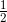
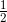
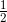

，L2 范数的权值衰减就是 ，然后将这个 加到损失函数上。这里，λ 是控制正则化强度的超参数。λ 设置得越大，对大的权重施加的惩罚就越重。此外， 开头的  是用于将 的求导结果变成 的调整用常量。
，L2 范数的权值衰减就是 ，然后将这个 加到损失函数上。这里，λ 是控制正则化强度的超参数。λ 设置得越大，对大的权重施加的惩罚就越重。此外， 开头的  是用于将 的求导结果变成 的调整用常量。机器学习的问题中，过拟合是一个很常见的问题。过拟合指的是只能拟合训练数据，但不能很好地拟合不包含在训练数据中的其他数据的状态。机器学习的目标是提高泛化能力，即便是没有包含在训练数据里的未观测数据，也希望模型可以进行正确的识别。我们可以制作复杂的、表现力强的模型，但是相应地，抑制过拟合的技巧也很重要。
发生过拟合的原因，主要有以下两个。
- 模型拥有大量参数、表现力强。
- 训练数据少。
这里，我们故意满足这两个条件，制造过拟合现象。为此，要从 MNIST 数据集原本的 60000 个训练数据中只选定 300 个，并且，为了增加网络的复杂度，使用 7 层网络（每层有 100 个神经元，激活函数为 ReLU）。
下面是用于实验的部分代码（对应文件在 ch06/overfit_weight_decay.py 中）。首先是用于读入数据的代码。
(x_train, t_train), (x_test, t_test) = load_mnist(normalize=True)
# 为了再现过拟合，减少学习数据
x_train = x_train[:300]
t_train = t_train[:300]
接着是进行训练的代码。和之前的代码一样，按 epoch 分别算出所有训练数据和所有测试数据的识别精度。
network = MultiLayerNet(input_size=784, hidden_size_list=[100, 100, 100,
100, 100, 100], output_size=10)
optimizer = SGD(lr=0.01) # 用学习率为0.01的SGD更新参数
max_epochs = 201
train_size = x_train.shape[0]
batch_size = 100
train_loss_list = []
train_acc_list = []
test_acc_list = []
iter_per_epoch = max(train_size / batch_size, 1)
epoch_cnt = 0
for i in range(1000000000):
batch_mask = np.random.choice(train_size, batch_size)
x_batch = x_train[batch_mask]
t_batch = t_train[batch_mask]
grads = network.gradient(x_batch, t_batch)
optimizer.update(network.params, grads)
if i % iter_per_epoch == 0:
train_acc = network.accuracy(x_train, t_train)
test_acc = network.accuracy(x_test, t_test)
train_acc_list.append(train_acc)
test_acc_list.append(test_acc)
epoch_cnt += 1
if epoch_cnt >= max_epochs:
break
train_acc_list 和 test_acc_list 中以 epoch 为单位（看完了所有训练数据的单位）保存识别精度。现在，我们将这些列表（train_acc_list、test_acc_list）绘成图，结果如图 6-20 所示。
图 6-20 训练数据（train）和测试数据（test）的识别精度的变化
过了 100 个 epoch 左右后，用训练数据测量到的识别精度几乎都为 100%。但是，对于测试数据，离 100% 的识别精度还有较大的差距。如此大的识别精度差距，是只拟合了训练数据的结果。从图中可知，模型对训练时没有使用的一般数据（测试数据）拟合得不是很好。
权值衰减是一直以来经常被使用的一种抑制过拟合的方法。该方法通过在学习的过程中对大的权重进行惩罚，来抑制过拟合。很多过拟合原本就是因为权重参数取值过大才发生的。
复习一下，神经网络的学习目的是减小损失函数的值。这时，例如为损失函数加上权重的平方范数（L2 范数）。这样一来，就可以抑制权重变大。用符号表示的话，如果将权重记为 ，L2 范数的权值衰减就是 ，然后将这个 加到损失函数上。这里，λ 是控制正则化强度的超参数。λ 设置得越大，对大的权重施加的惩罚就越重。此外， 开头的  是用于将 的求导结果变成 的调整用常量。
对于所有权重，权值衰减方法都会为损失函数加上 。因此，在求权重梯度的计算中，要为之前的误差反向传播法的结果加上正则化项的导数 。
L2 范数相当于各个元素的平方和。用数学式表示的话，假设有权重 ，则 L2 范数可用 计算出来。除了 L2 范数，还有 L1 范数、L ∞范数等。L1 范数是各个元素的绝对值之和，相当于 。L∞范数也称为 Max 范数，相当于各个元素的绝对值中最大的那一个。L2 范数、L1 范数、L∞范数都可以用作正则化项，它们各有各的特点，不过这里我们要实现的是比较常用的 L2 范数。
现在我们来进行实验。对于刚刚进行的实验，应用 λ = 0.1 的权值衰减，结果如图 6-21 所示（对应权值衰减的网络在 common/multi_layer_net.py 中，用于实验的代码在 ch06/overfit_weight_decay.py 中）。
图 6-21 使用了权值衰减的训练数据（train）和测试数据（test）的识别精度的变化
如图 6-21 所示，虽然训练数据的识别精度和测试数据的识别精度之间有差距，但是与没有使用权值衰减的图 6-20 的结果相比，差距变小了。这说明过拟合受到了抑制。此外，还要注意，训练数据的识别精度没有达到 100%（1.0）。
作为抑制过拟合的方法，前面我们介绍了为损失函数加上权重的 L2 范数的权值衰减方法。该方法可以简单地实现，在某种程度上能够抑制过拟合。但是，如果网络的模型变得很复杂，只用权值衰减就难以应对了。在这种情况下，我们经常会使用 Dropout [14] 方法。
Dropout 是一种在学习的过程中随机删除神经元的方法。训练时，随机选出隐藏层的神经元，然后将其删除。被删除的神经元不再进行信号的传递，如图 6-22 所示。训练时，每传递一次数据，就会随机选择要删除的神经元。然后，测试时，虽然会传递所有的神经元信号，但是对于各个神经元的输出，要乘上训练时的删除比例后再输出。
图 6-22 Dropout 的概念图（引用自文献 [14]）：左边是一般的神经网络，右边是应用了 Dropout 的网络。Dropout 通过随机选择并删除神经元，停止向前传递信号
下面我们来实现 Dropout。这里的实现重视易理解性。不过，因为训练时如果进行恰当的计算的话，正向传播时单纯地传递数据就可以了（不用乘以删除比例），所以深度学习的框架中进行了这样的实现。关于高效的实现，可以参考 Chainer 中实现的 Dropout。
class Dropout:
def __init__(self, dropout_ratio=0.5):
self.dropout_ratio = dropout_ratio
self.mask = None
def forward(self, x, train_flg=True):
if train_flg:
self.mask = np.random.rand(*x.shape) > self.dropout_ratio
return x * self.mask
else:
return x * (1.0 - self.dropout_ratio)
def backward(self, dout):
return dout * self.mask
这里的要点是，每次正向传播时，self.mask 中都会以 False 的形式保存要删除的神经元。self.mask 会随机生成和 x 形状相同的数组，并将值比 dropout_ratio 大的元素设为 True。反向传播时的行为和 ReLU 相同。也就是说，正向传播时传递了信号的神经元，反向传播时按原样传递信号；正向传播时没有传递信号的神经元，反向传播时信号将停在那里。
现在，我们使用 MNIST 数据集进行验证，以确认 Dropout 的效果。源代码在 ch06/overfit_dropout.py 中。另外，源代码中使用了 Trainer 类来简化实现。
common/trainer.py中实现了Trainer类。这个类可以负责前面所进行的网络的学习。详细内容可以参照common/trainer.py和ch06/overfit_dropout.py。
Dropout 的实验和前面的实验一样，使用 7 层网络（每层有 100 个神经元，激活函数为 ReLU），一个使用 Dropout，另一个不使用 Dropout，实验的结果如图 6-23 所示。
图 6-23 左边没有使用 Dropout，右边使用了 Dropout（dropout_rate=0.15）
图 6-23 中，通过使用 Dropout，训练数据和测试数据的识别精度的差距变小了。并且，训练数据也没有到达 100% 的识别精度。像这样，通过使用 Dropout，即便是表现力强的网络，也可以抑制过拟合。